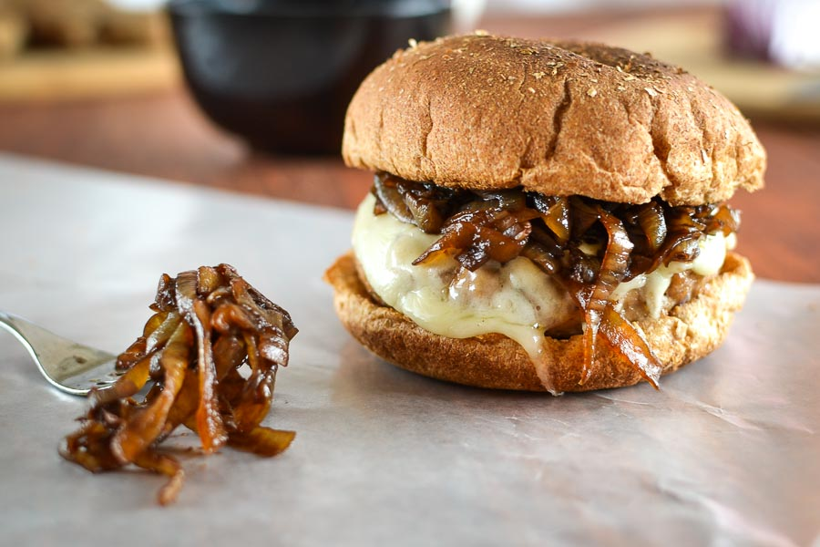

Hamburger

Description
Hamburger it's a beloved fast and easy dish. This recipe will add an especial touch to this dish,
with the addition of the caramelized onion and a easy ketchup n' mayo mix sauce.
Ingredients
- 150g seasoned Hamburger Patty
- 1 Hamburger Buns
- 1 tbsp Olive Oil
- 2 slices of Cheese
- 1/2 sliced Onion
- 1/2 tbsp Oil
- 2 tbsp Sugar
- 1/2 tbsp Shoyu
- 3 tbsp Ketchup
- 1 tsp Mayonnaise
Steps
- Heat the oil and then add the onion to the pan and cook to soft.
- Add the sugar and cook until the onion is caramelized.
- Add the shoyu and cook for 1 more min.
- Fry the hamburger patty for 2 mins on each side over high heat, and then switch the heat to low and fry
for another 1 min on each side.
- Add the cheese on top of the patty and let it melt.
- Butter the buns and toast them on the fry.
- Add the ketchup and the mayo to a recipient and whisk them together, then spread it on the buns.